Want to learn more about what i've done? Click on the link below...
Contact Me
Mammoth Mobile Application
Bannas
- Client: RSA Student Design Awards
- Date: September to December 2016
- Skill: App Design
Winchester Silverbacks
For this project, there was no set brief as it was something I undertook myself. As part of the local American Football team, we didn’t have a logo. I therefore created one using already existing American Football logos as a reference point. Using the coach of the team for some feedback if needed.
- Client: None
- Date: November 2015
- Service: Graphic Design
The Bear
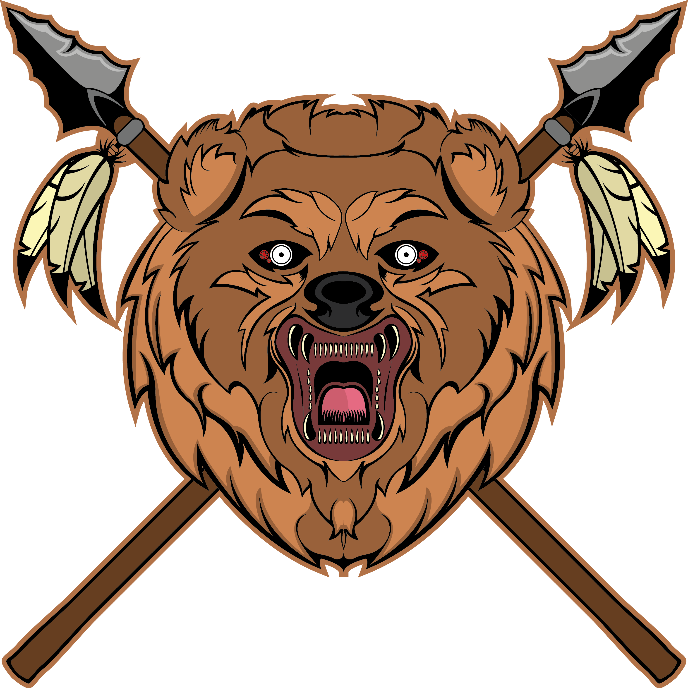
This project was created for the potential of a t-shirt brand being developed from one concept. It wasn't created for a specific client or to a brief in mind. It was a task I wanted to do to show how to mock up products using Photoshop Smart Objects
- Client: None
- Date: March 2015
- Service: Illustration
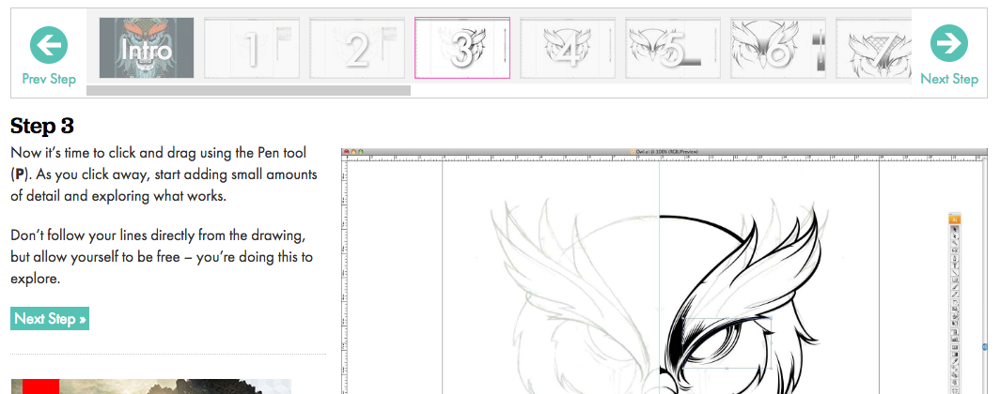
The project began when I found a step-by-step guide to creating vector illustrations using Photoshop and Illustrator together. I really liked the attention to detail the illustration had and I wanted to incorporate this into one of my own drawings.
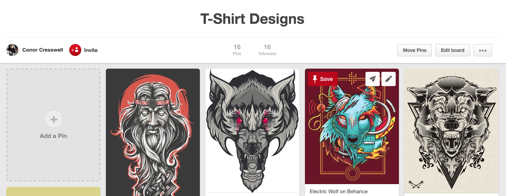After reading through the guide, I began to design my own illustration on paper. To do this, I used Pinterest to research different vector illustrations. I use Pinterest for a lot of different project so it was my first place for research.
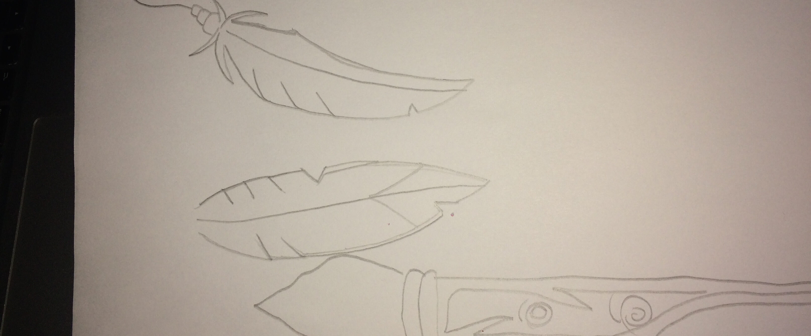After researching, I began to sketch a wolf, a bear and other native american animals. In the guide, they suggested to draw one half then using Photoshop to make the photo symmetrical. This would make it easier to draw in Illustrator.
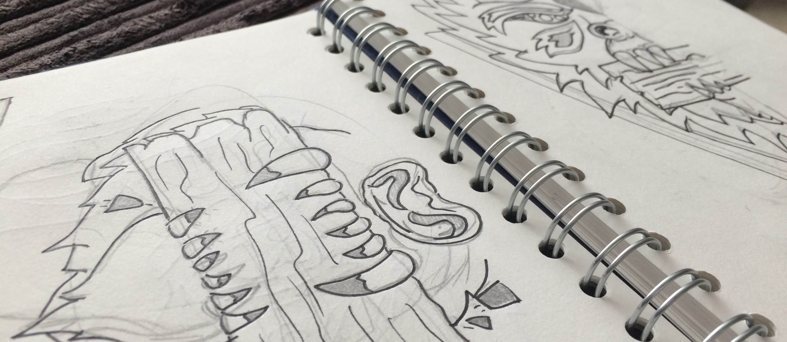Continuing on, some of the sketches focused on a specific section. This was as I like to draw different things for a project, then accumulate them into one illustration digitally.
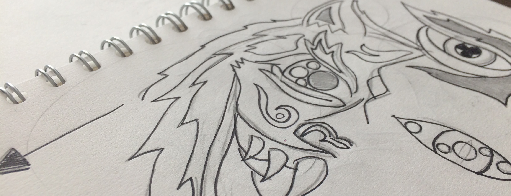Here are some more sketches.
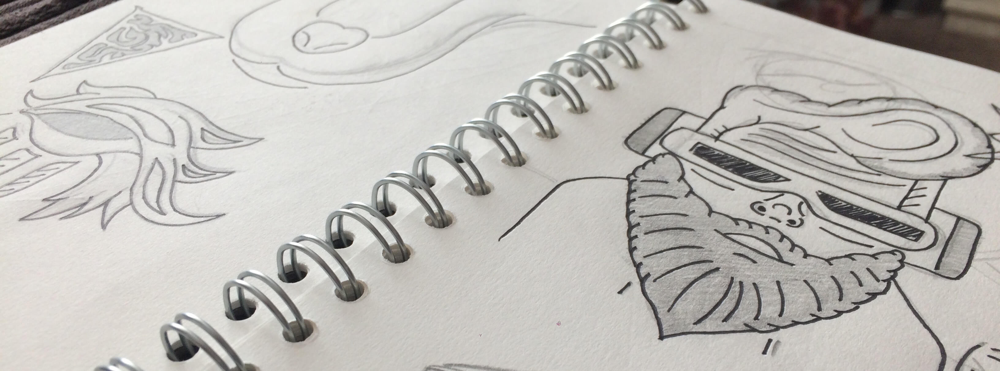Some additional sketches here showing off alternative ideas for different t-shirt designs that might appear in the future.

After taking some of the sketches into Photoshop, I exported them as one image. This image was then used to draw over using the pen tool in Illustrator. After drawing one side of the bear, I duplicated one side of the face, flipped it then fused them together to look like one face.
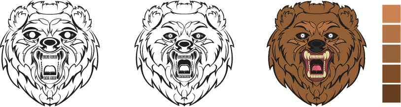After getting feedback from some of my peers in the design studio I was working in. I was told that it didn't look much like a bear at this point so I went onto Google to look at real bears. I then altered the illustration to make it more realistic. After this, I developed a colour scheme that would be used and painted this underneath the illustration on a separate layer in Illustrator.
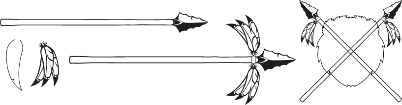After completing the main face, I went back to the sketches of the spears then went through a similar development process in creating it. Doing the outlines first and making sure it was symmetrical. Some of the staff sections of the spears I intentionally made asymmetrical as wood isn't naturally symmetrical.
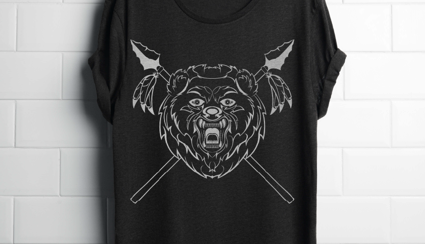After finalising the design both with and without colour. I found a Photoshop Smart Object mock up that I could use to show the design on a t-shirt. Adding feathers underneath the head of the spear to add to the native american influence on the illustration.
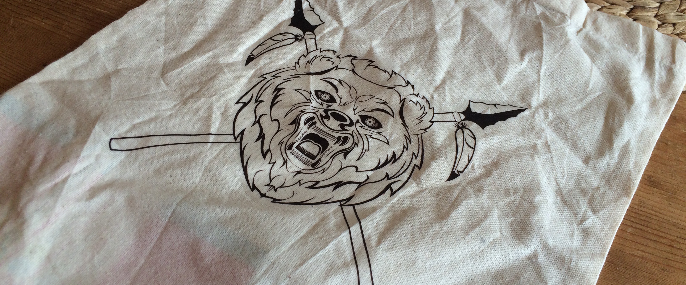I was also given the opportunity to have this illustration printed onto a canvas bag for out End of Year Show. I took advantage of this to further understand how the illustration would look on different products. Overall I am pleased with the outcome of this project. Pushing myself to do something that I have not done before with any of my illustrations. I will continue to design different t-shirt designs with the hope of selling them commercially online through a third-party service.
Echelon Birds and Animals
In this brief, the client wanted 82 different illustrations of animals and birds. They would be created in use for a game Echelon would be developing. The target audience of the game is children between the ages of 3 and 6 using a style that would be simple yet detailed enough to distinguish each animal.
- Client: Echelon Networks
- Date: October to December 2015
- Service: Illustration
The Fox and Hounds
Creatuing simple illustrations that would be used to brand and populate the pub’s website. With this project, they had no set brand guidlines besides the colours used within the pub. I took photographs of items and objects within the pub itself to use as references when illustrating.
- Client: The Fox and Hounds Pub
- Date: April 2015
- Service: Illustration
Different Things
Children Book Illustrations
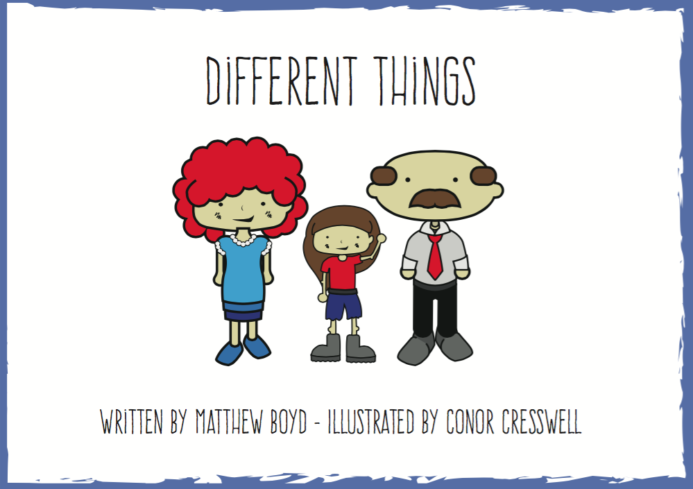
The brief was to illustrate and create a childrens book for children ages 2 to 4. The story was already given to me by the client with some suggestions of images however I had to includesome of my own ideas to finish the project.
- Client: Matthew Boyd
- Date: January to May 2015
- Service: Illustration
Once I was given the brief, I took the time to explore this brief using an brainstorm.
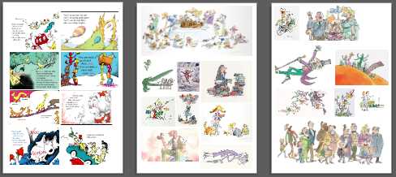In order to gain an understanding of book illustration and childrens books I did some research using different resources.
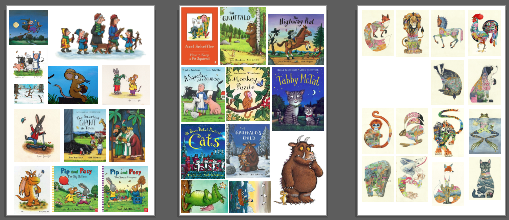I continued to research different illustrators and writers.
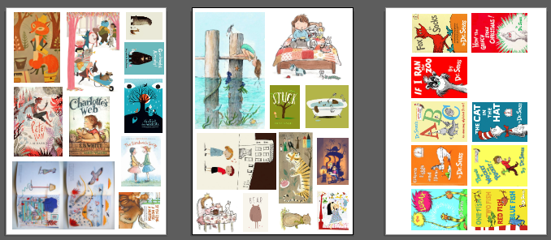Additional research images.
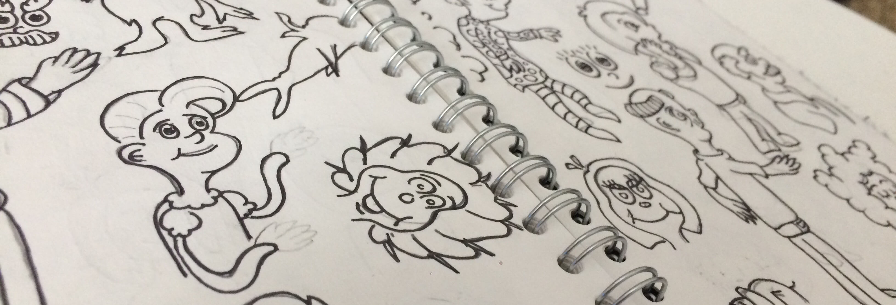After doing research on multiple different illustrators and writers; I began to create these sketches digitally using a variety of tools to develop them further.
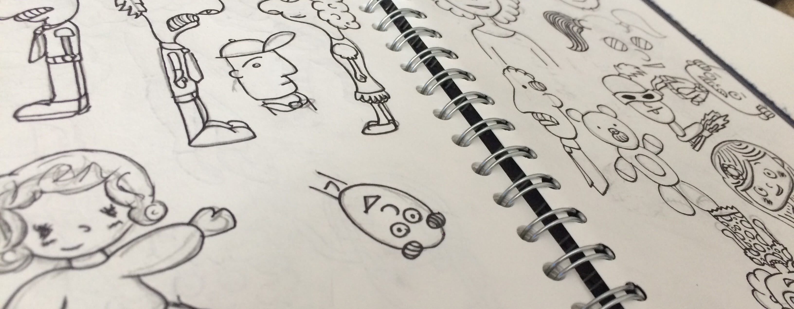I experimented with different styles based on the illustrators I looked at. For example, within my sketchbook there is a page dedicated to characters based on Dr. Seuss' ilustration style.
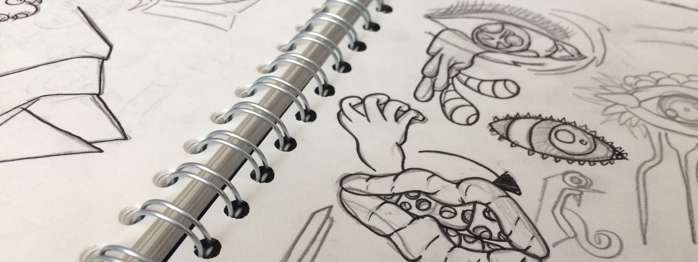I illustrated characters that used similar physical attributes however I would change them based on the style I was attempting to mimic. For example, the mother character in some has large curly hair then in others she has straight hair.
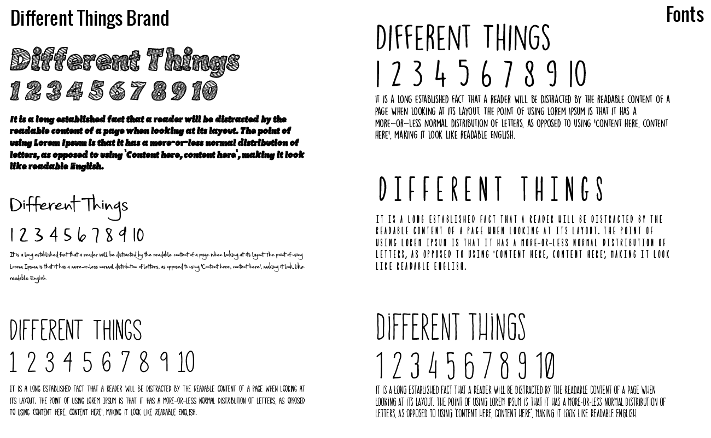Moving away from the characters, I decided to look at overall branding for the book. Taking into consideration the different fonts that could be used. The font I ended up using is in the bottom right corner of the image below. I chose this one above the others as it was the most legible font. I couldn't allow myself to get carried away with the design and not forget the purpose of the product.
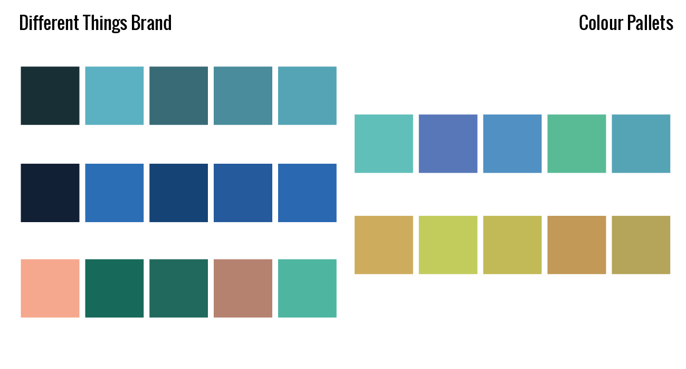I also experimented with different colour schemes for the book. This was done after the font was chosen therefore it had to compliment this and the target audience of 2 to 4 year old girls.
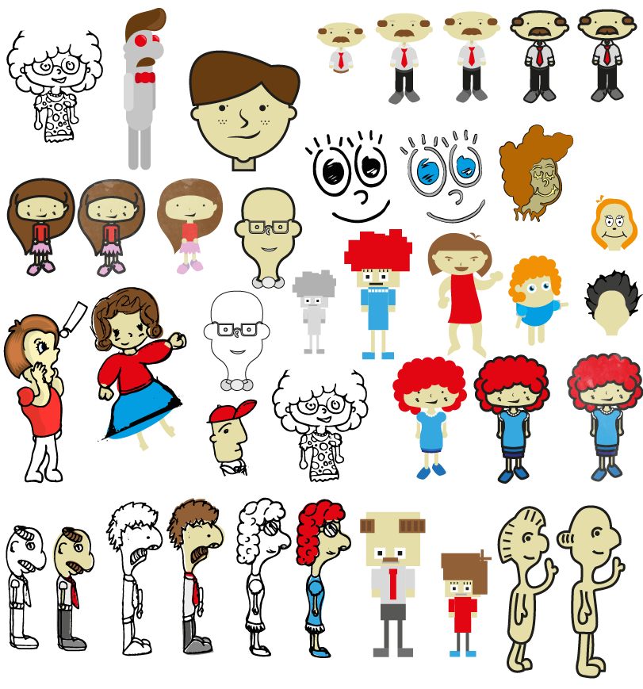After creating multiple sketches, I decided to take them all onto the computer using Adobe Illustrator to recreate them. I woulc also use this software to experiment with the style of the character's further.
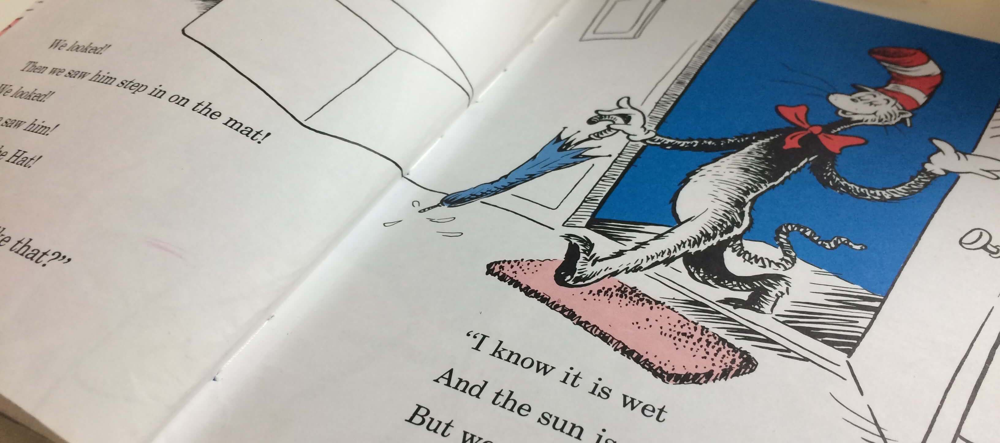By this point in the project, I had hit a metaphorical brick wall in my designing. I was unsure of where to go next. Luckily, I had a peer evaluation presentation and was offered some advice. The biggest piece of advice I took was looking at real childrens books from the library and looking through them.
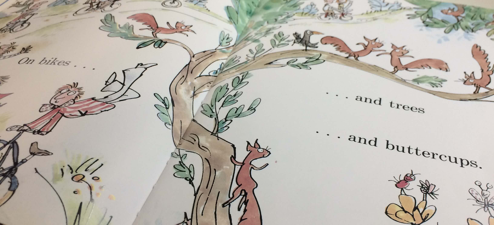The books I looked at where The Cat in the Hat, The Gruffalo, A Great Day to Up and Are you my Mother?.
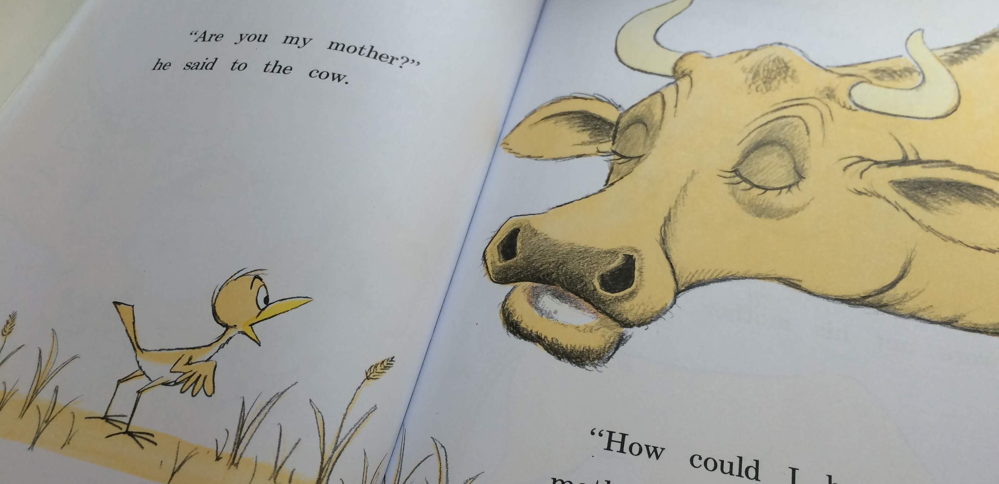I read through these books, going through each page and analysing it. Gathering an understanding of things such asas to why they have put text in certain places, why they place the image on the left istead of the right and how they used the book itself to impact the story.
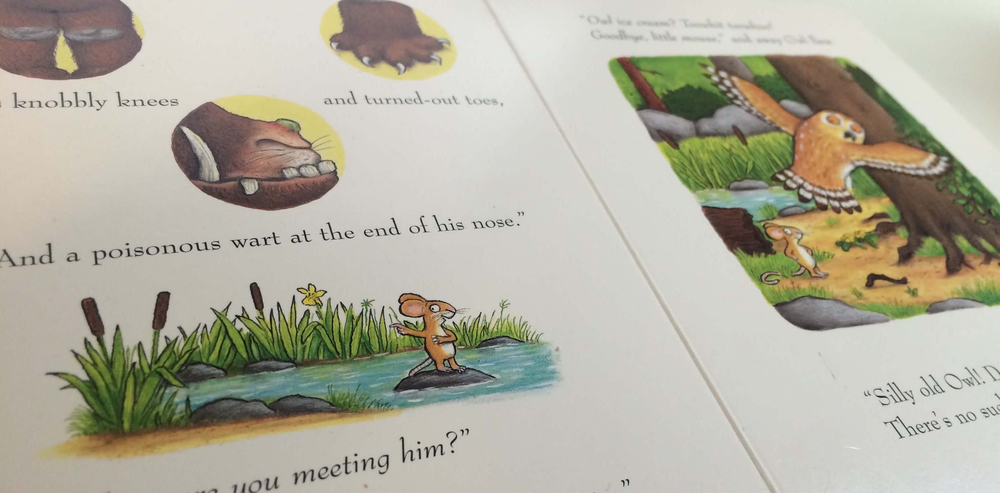These notes where very useful at the development of my project.
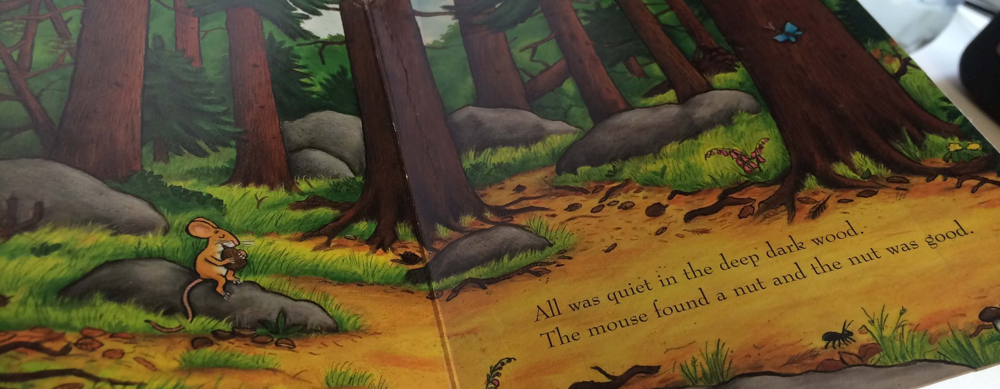Additional research of layout.
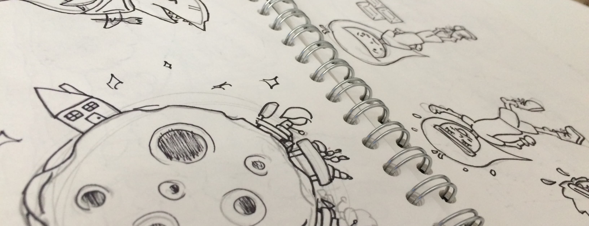After gathering additional research from library books, I began to illustrate the characters and scenes that would appear in the book. Placing characters I had designed into new environments based on the script in the story.
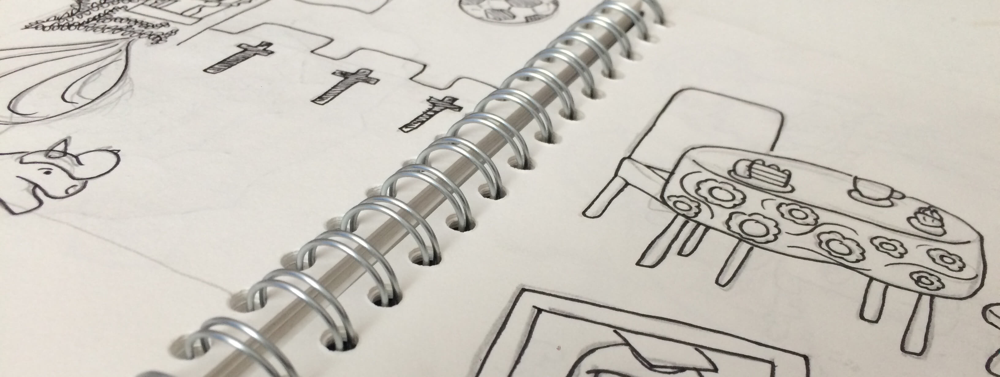Taking some of the points raised in the story quite literally to add humour to the story that was outside of the text.
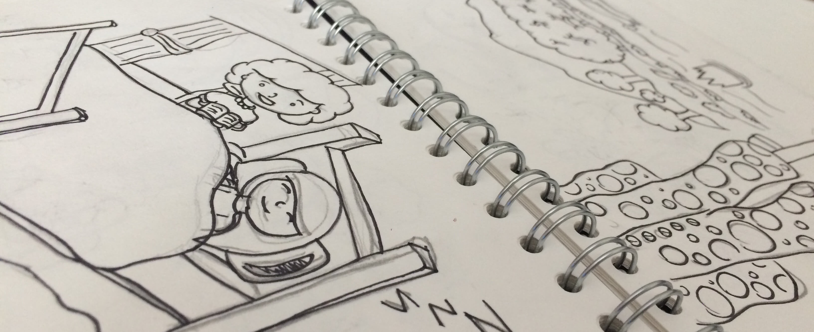Illustrating objects such as castles, beds and other furniture from different perspectives was a struggle I faced as I am not too comfortable with 3D sketching. 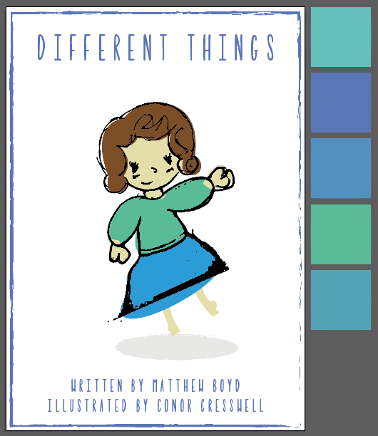
I decided to mock up a cover for the book in the portrait layout using the font and colour schemes I had chosen.
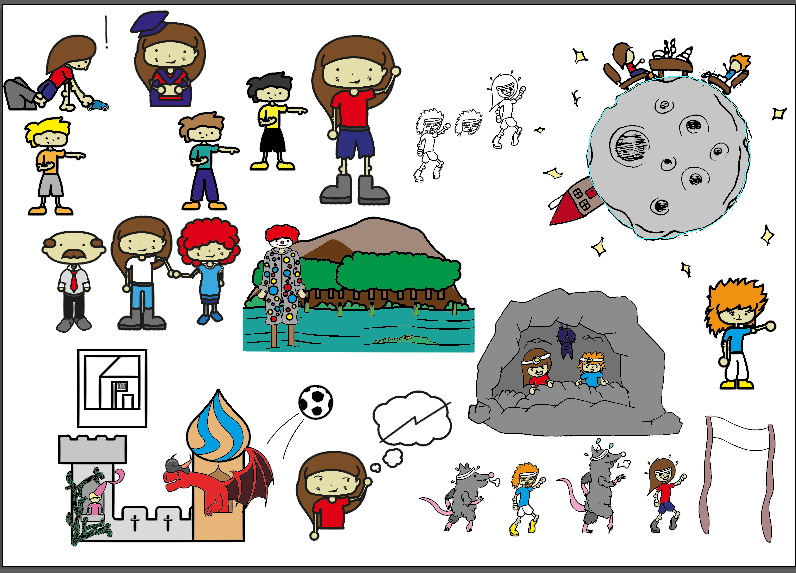I then began to finalse all the illustrations for the book. Using the sketches as templates to build upon in Adobe Illustrator. Personally, I am not pleased with the final outcome for this project. I began to loose interest in it part way through and it slowly became a chore to complete. Additionally the quality of the illstrations are not as well executed as I know I can achieve. However I am extremely pleased with my effort to include more research for this project. Going through the proccesses that I have been learning of the last three years of my education at university. Using sketches to develop characters and ideas. I have learned a lot from this project and I won't make the same mistakes as I did.
Schoolboy Errors
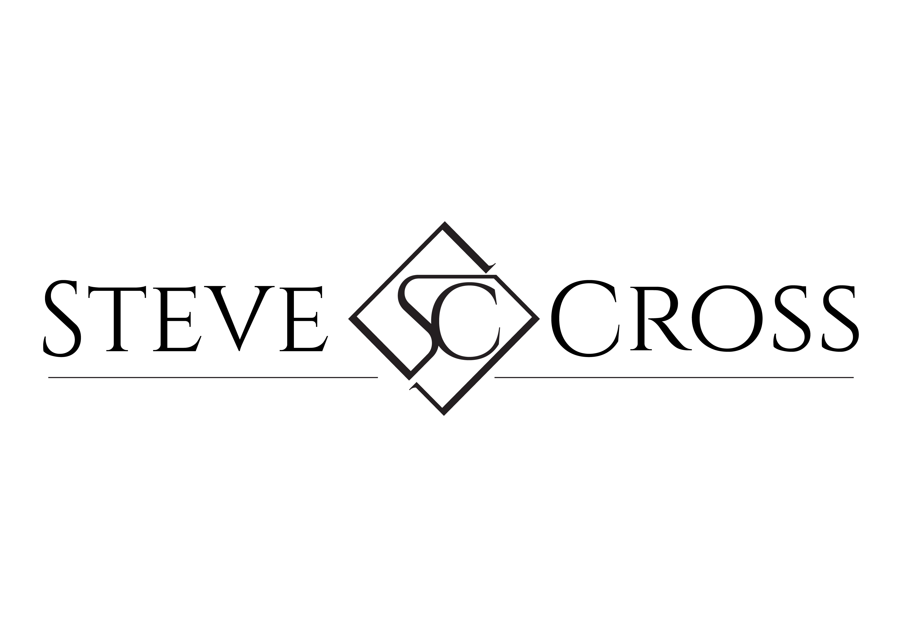
Use this area of the page to describe your project. The icon above is part of a free icon set by Flat Icons. On their website, you can download their free set with 16 icons, or you can purchase the entire set with 146 icons for only $12!
- Client: Start Bootstrap
- Date: April 2014
- Service: Web Development